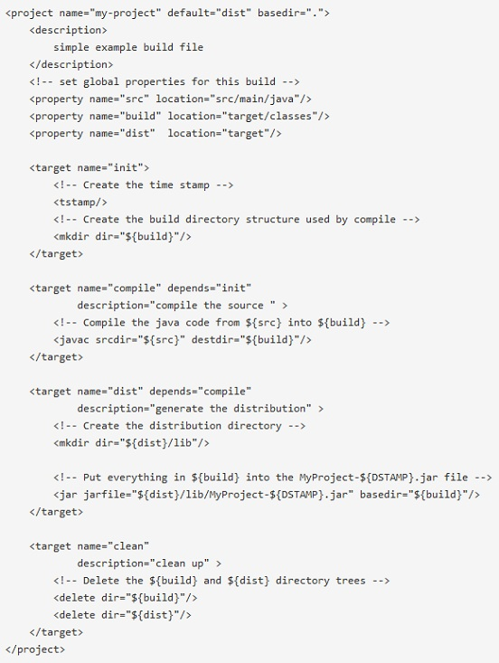

What is Maven?
Simple build file in Ant

Maven also provides
- Simple project setup
- Consistent usage
- Superior dependency management (includes transitive)
- A large and growing repository
- Extensibilty through plugins
Hello World
- Setup
- Using archetype
- Defining dependency
- Overriding defaults
- Installing artifacts to local repository
- Pushing it to Nexus
- Generating reports
Beyond Hello World
- Converting existing project
- Multi-module project
- Creating EAR projects
- Creating custom archetype
What's so special about Maven?
- Convention Over Configuration
- Common interface
- Universal Reuse through Maven Plugins
- and a happy developer
Questions ?
If you are still waiting for this.